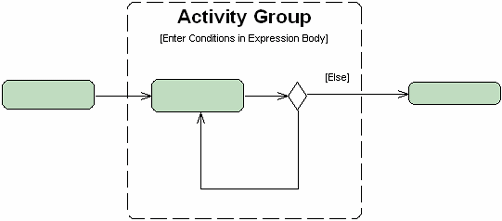

Adding or Modifying Activity Group Conditions
See Also
You can add or modify Activity Group Conditions.
To add or modify an Activity Group Condition:
- In the Diagram editor, double-click inside the brackets of the target Activity Group.
- Type a new expression or modify the existing expression of the Activity Group condition and press Enter.

- See Also
- Working With Activity Groups
Legal Notices